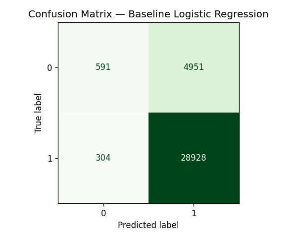

NYC 311 Cloud Data Pipeline
Built a cloud-based data pipeline to store and query 200,000 NYC service requests using AWS. Uploaded raw CSV data to S3, queried it with SQL through Athena, and loaded results into SageMaker to prepare for predictive modeling.
More details
Problem
A dataset of 200,000 NYC 311 complaints is too large to work with comfortably on a laptop. The goal was to store the data in the cloud, query it efficiently without downloading it, and set up an environment ready for machine learning.
Approach
I created an S3 bucket to store the raw complaints and agency CSV files in an organized folder structure. I then used AWS Athena to run SQL queries directly against the S3 data — no database server required. Finally, I launched a SageMaker notebook instance, cloned my project repo into it, and loaded the query results into pandas for exploration and modeling prep.
Results & Impact
Successfully queried 200,000 rows of complaint data in seconds using SQL without any local processing. Identified patterns in complaint volume by agency and borough, and built a modeling-ready dataset exported back to S3. Documented the full workflow in a public GitHub repository.